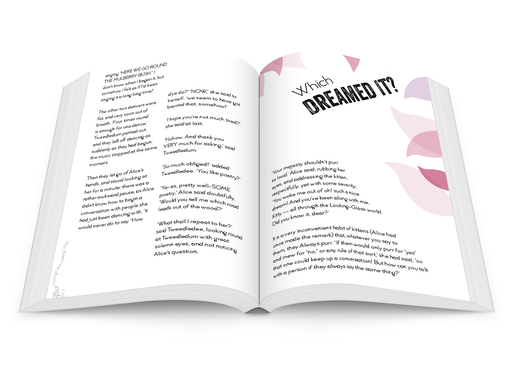
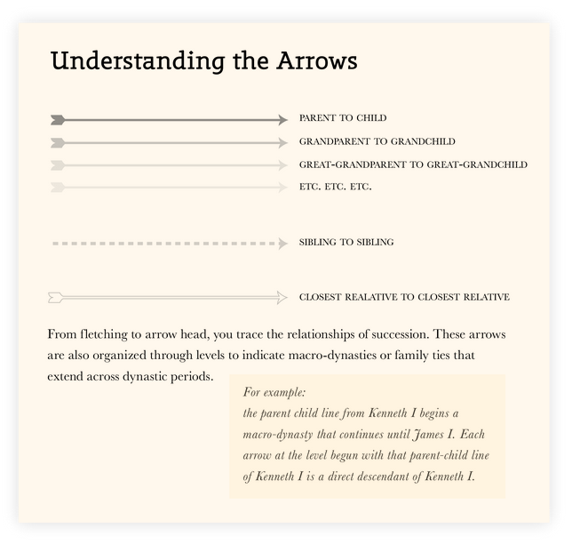
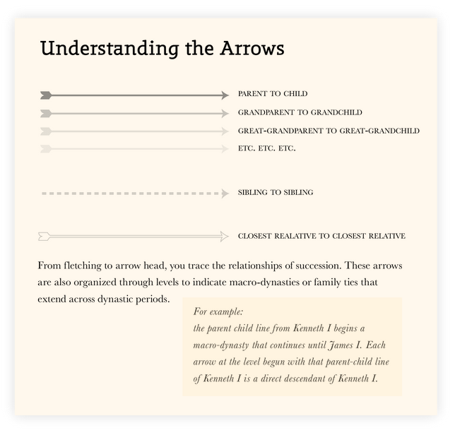

I wanted to design a beverage that captured the joyfulness of celebrating. No matter if the celebration is big, like a graduation, or a little smaller, like when you finally finished coding a website.
Glissen is marketed towards the uninterested in alcohol (be they young or be they old) so the packaging had to be both fun and sophisticated, in order to appeal to the wide age range.
Glissen comes in two delectable flavors: "Sparkling Apple Soiréee" and "Sparkling Pear Partaaay."

As a younger human, my parents would always read me faerie tales and folk tales before I went to bed. One of these collections was The Troll with No Heart in His Body, a book of troll stories from Norway. I loved them because I loved trolls, but I always found the wood cut illustrations to be rather crude, and they were not my type of beautiful.
When redesigning the book cover I wanted to focus on photography, and photoshop inorder to enhance my skills in these areas. I also wanted to work with typography and create a typeface (or version of a typeface) which captures the tone of the book. A rather scary troll trudges up a Norwegian mountainside with the sunset poking through his body to show that he has no heart.
The addition of photography helps to place the reader in a physical setting, which the woodcut cover did not emphasize.

Click below in order to take a look at the book on Amazon
the Book

The Twin Cities library system is an incredible resource, but it lacks any software for on the go capabilities, or at least quality software for on the go.
The current mobile app is cluttered and dense, with none of the elegance that is so inherent to books and libraries in general. My effort was to create a helpful mobile app, that allowed users to easily check out and find books, as well as share their book and library related activities with others. The idea was to connect it with goodreads, the popular book sharing site.
Using a combination of html, css, and jquery I was able to develop a warm and inviting app that allows for ease of use.
Click below for the mobile app
Mobile


The summer of 2014, I was an intern at Epic Systems in Madison, WI. This internship allowed me to delve deep into user experience and better understand how users look at software programs. I worked on a project with seven other interns, all but one of them software programers, to solve the issue of displaying patient histories.
The goal of the project was to handle a large and complex system and make it seem simple. I believe we achieved that. Using a combination of adequate white space, and thoughtful placement, we were able to achieve a site that is simple to use despite its complexity of capabilities.
Due to copy write issues only one image is shown here.

As part of a typography assignment we were asked to think of an interesting, and original way to represent recipes. I chose to represent them in a roundabout fashion, because baking is usually a rather cyclical process. You follow the directions step by step but you also tend to regularly check back in with the ingredients list.
I wanted them to be fun as well. For me baking is fun experience and I wanted the recipe cards to reflect that rather than the more typical scientific layout used on most recipe cards.
Lastly I wanted to add a dash of whimsy and include some illustrations I did of some of my favorite literary characters. This design decision was due to my desire to make the cards more memorable, attaching faces to the recipes rather than just a name. Plus how fun would it be to say, "I need Candide!" instead of, "I need the honey bread recipe card."


Alice's adventures are whimsical and fantastical. They are not standard. I wanted to design a book that captured this theme. Using InDesign I created a book that straddled the line between readability and whimsy.
The book was designed using a thorough process of analysis looking into several of the characters. The colors, typefaces, and layouts were all developed in an effort to capture the essence of Alice Through the Looking Glass.
The process allowed me to further develop my InDesign skills.
Click below for the full book
Ebook


My final task at the University of Minnesota was to complete a thesis project on a subject of my choice. I choose to try and explain the succession patterns of the British Monarchy. It was interesting because it was complicated and long lasting, a fascinating topic to research.
The thesis program is divided into two parts: writing and exhibition. During the first semester, I spent time reading several books, and using online family trees to understand how the succesion worked. I also endeavored to learn more about the women that are forgotten in the passing of time. Women who had an important impact on the path of the monarchy. The culmination of this research was a paper, or more accurately two papers, that I transformed into a book. This transformation allowed for me to begin thinking about my design decisions that would eventually be applied to my final project.
The second semester was spent creating a thesis project which used this research as a base. While my project veered away from a strictly female filter, the information learned during the writing semester did not go to waste. A combination of image creation and html/css/jquery coding created this site. Using the design skills that I've spent the last four years learning, I attempted to create a site which organizes these historical figures into an easily understandable fashion. I used color to unify countries, dynasties, and family succession. I also made sure to include information about my design decisions, and my learning process. I created a site that allows you to trace lineages across dynasties, to understand relationships that allowed for succession, and gives concise information about each monarch.
This long term project allowed for sufficient depth to create something I'm incredibly proud of. Thank you for taking a look.
Click below in order to take a look at complete site, or see a copy of the thesis book.
the Site
the Book
 

My love of art started young: drawing came first, sewing was almost an inherited skill, and ceramics has been a passion since elementary school. Art, reading, learning, history, nature, baking, are just a few of my many passions, and I can find amazement in many different things.
The six images are of art experiences I've enjoyed.
The first is a project which combined screen printing, dying, and sewing. I learned how to sew through the art of pillow making, and it was great to bring this skill all the way to college and even add on to the experience.
The second is a current project I'm endeavoring for fun. I've been living with the same five girls for two years now, and known them all for four. To honor our time together I've decided to draw mini-portraits of them all. Olivia, Jin, and Lucy are the ones I've decided to show here.
The third is a representation of my many years in ceramics. Functional pottery is my work of choice, with a special interest in using glaze to create organic looking pots, items that wouldn't look out of place in a natural setting.
The fourth and fifth are images I've taken in the past year. My interest in photography was stimulated by my getting a new camera and then going abroad. My time in Scotland, and traveling Europe encouraged me to develop my photographic skills, I took at least one photo a day and posted them online during my semester. I have a particular interest in photographing animals and human beings.
The sixth is an example of my own forays into fiction writing. I have been an avid reader since the fourth grade, and it came easily to me that writing should be something I try. The image also links ibooks store, where you can download this book I wrote and designed.
So many things are fascinating, I just have to learn a bit about them all.


Welcome to the website! A quick look at my work, and a little insight into who I am. Feel free to contact me with any questions or... if you want me to stare really hard at a page and tell you how your text doesn't quite line up with that box.
Fun Fact: I can drive 'STICK' and can bake an authentic French Baguette
© copyright Yvonne R Muller 2014

Here is my linkedIn profile for a little more information about me.